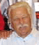

On boarding the plane I made sure I had on my green hat with the Fourth division patch on it. Under the emblem is embroidered C-1- 23, noting the Company , battalion and regiment that I was a part of many years ago. Wearing the hat is a beacon for other Marines, I was looking for others going in the same direction to the fiftieth reunion of the Fourth Marine Division from world war II, being held in Kansas city. 'No takers,' I said to myself, as there was no recognition from my fellow travelers, I took my seat. As the plane took off, grabbed the arm rest with a vengeance, knuckles whitening until the plane was airborne. I finally relaxed as the plane leveled off. Laying back in my seat I remembered my first flight, it was in a C-47, with bucket seats. Leaving Guam in 1947, after eighteen months with the 9th. AAA battalion there, and six month with the Fourth Marine division on Maui, my tour of duty completed, I was on my way home. Getting all my stripes on Guam, I left as a buck sergeant. I remembered being thrilled getting on the plane, it was the ultimate, who ever thought about flying, that was out of realm of our existence. Getting out of the Marines meant, getting a job, taking the bus to work every day, earning a living, working, sleeping, no more excitement, no more adventure, no new places to see. So getting a chance to fly on an airplane, was a real bonus. Guam to Hawaii, by plane, just plain good luck.
The Marine lieutenant our pilot, made me smile; once in the air, he put both his feet on the instrument panel, crossed his ankles and sat back in his seat, with one finger he held on to the wheel, guiding us to our destination. He whistled a tune, real relaxed.
We started late in the afternoon from Guam, that evening we refueled in Kwajalin, how the pilot saw the Island in total darkness was amazing to us. Flying through the night gave us a dual treat. The sun going down behind our flight spread out a panorama of reds and purples to fading grays as the sun set. Morning gave us streams of light coming up from the cloud cover below. Streams of light, pink hued, emerging to brightening blasts of red, as they pierced the clouds illuminating the cabin, finally forcing eyes to slits as, the heavens engulfed us with it's glory. There was wonder in it all.
The moment disappeared as our corpsman sitting next to me started to panic. He grabbed my arm and started blubbering in my ear,
"Ya think we're gonna make it, sounds like the motor is missing, we gonna make it, huh! huh!"
"Leave me alone fer Christ sakes."
My retorts sent him into a slouch. He never moved for the remainder of the trip. I went back to enjoying the flight.
Next stop was Johnson Island. Landing we chased all the gooney birds up and away, only to have them drop down again as we taxied to the end of the airstrip Taxiing to the end of the airstrip we made a quick left, otherwise into the drink.. Eight Quonset huts the extent of the quarters there, two stunted pine trees guarded the doorways, one on each side of the entrance. So much for Johnson Island. A half hour of fueling gave us a chance to notice the inhabitants of the island. The men stationed there seemed in a trance, starring into space. Later I found out that most of the men stationed on those remote rocks were on release programs from various Naval prisons, like Leavenworth or Portsmouth. The choice was do duty there or end up with a dishonorable discharge. It was at a cost. Made us think that our time served on our rock, Guam, was not so bad.
The cream on the top of the cake came when flying over Diamond head on Oahu, green and brown patch work of planted and plowed fields melding at the base of mountains into fertile valleys: encased by frothing white surf, to sapphire blue ocean: the sight was heightened by our pilot for our pleasure, by dipping the wings on a slight roll, to give us a full panoramic view of that paradise.
But home and out of the Marines, like most other service men, wanting to or not, drawing a blank on the past. At first, renewing the Company of old friends at home, and then later starting our families; then the stress of maintaining our positions in a new society, which definitely was not what we left behind before going into the service. All those pressures shuttled our previous experiences to a minor variants; the checking of old photos, or a few T.V. renderings of Pearl Harbor and D Day rekindled our memories of the past. I forgot my roots in the Marine corps, only to be awakened at sporadic intervals. One such incident occurred while standing in a check out line in a super market. Holding onto my son's hand, a Navy Lieutenant Commander in full dress whites ahead of me in line, is talking to his wife while being checked out. My son seven years old looks the Navy man in the eye and says, "My daddy was in the Marines." "Hey Tom," I said being embarrassed by his forwardness. The lieutenant Commander looks at my son smiles and says, "And I bet he was a good one". I smiled back at the officer and think to myself , in one way or another we were all good Marines. My being a Marine awakened at that moment a feeling of pride, that those who have served can only feel; again though, it fell back into that recessed area of my mind.
Our home at the time bordered on a community of Naval residences, in this area during the Vietnam war you could see many Marine personnel in dress blues, either at the super market or at the local bars. I never approached any of these Marines, but it brought back a glimpse of what my past was. These men were recruiters assigned to the New York area, I later found out why they wore the full dress uniforms, they were on a mission, going as far as Brooklyn or the Bronx to inform relatives of the death of their loved ones. Before I understood why they wore the dress uniforms, I often wondered why they looked so depressed. Not a job I would have wanted, but they were Marines who had a job to do; and I remembered what a light colonel said to me once when I said I would try to do an assignment ordered, " Son we don't try in the Marines we do." So be it for the Marines. Those memories always falling away, but constantly in the back of our minds.
But that was it, get a job, take the bus to work, put it all behind you, get on with your life. My second daughter changed all that, on her job, one of the men working there came in one day sporting a bright blue jacket, on the back of the jacket was a huge patch from the First Marine division. She mentioned that I her father had been in the Marines to the gentlemen. He questioned her asking if I had gone to any reunions, She answered no, stating she believed that I did not know they existed. Further conversation revealed that all of the Marine divisions had reunions every year. He told her he knew of an ex Marine from the Fourth division, and gave her his phone number, she in turn gave it to me. I took the paper she gave me with the man's mane and shoved it in my wallet, not thinking much of it. One day I remembered the note and gave him a call. We talked for some time, eventually he gave me the address of the fourth division association. I called them and received an application in the mail to join the association. I did and received my first newsletter in the mail. In that first issue I see an article by a Russell Gross, about a min-reunion of C Company twenty third Marines in Sebring Florida, my old outfit. I reflected on my belonging to that group of veterans. My initial fear on contacting persons from the Company was due to my short term with the division, after all my time of six months did not include any of their previous invasions. As a replacement, my position was minor. My time with them was spent on Maui in training for the invasion of Japan, Harry S. settled that with the bomb. I called Russell Gross, explaining my time with the Company, and to my amazement he invited me to the mini- reunion in Sebring, with the quote "If you were there, you are one of us, welcome aboard." Still I was skeptical. I wondered what makes these guys want to get together and hold on to what was probably some of the worst experience of their lives. I was to find out.
Now going into my second reunion at Kansas City. It became my pleasure to be associated with some of the finest people I have known in my lifetime, and awakened in me a camaraderie and an honor of being apart of the alumni of the U.S. Marines.
My first contact with the members of the Company was at that mini- reunion in Sebring Florida. I walked into the Village Inn in Sebring and was greeted there by a short stocky guy, that was Russell Gross. I told him who I was, he gave me a tag with my name on it, he shook my hand and told me to take a seat. Approximately thirty people were seated at a long table. Waves of recognition accompanied by smiles put me at ease. Then I noticed a woman sitting across from me and to my left, squinting as she checked out my name tag. I started getting nervous, I tried to avoid eye contact, but I see she is still giving me the once over. Now I'm thinking, jeez, I don't belong here I'm not apart of this group, I never should have come. At the rest of the luncheon I said very little and felt very small. After the luncheon they were gathering into small groups, shooting the breeze. I stood alone nursing my feeling of disenfranchisement. The woman who was checking me out came towards me. I thought, now I'm gonna get it, she's gonna rip off my tag and send me home. To my amazement she came up to me with a big smile and says in Serbo Croatian, "Cocosta vie" ( How are you). before I realized what was happening I blurted out "Dobra falla" (Good thanks). So much for paranoia. She reading my name on the tag, and seeing Rackovitch, assumed that I was one of her own, not quite, but as a Croatian greeting a Serb in native tongue, all fell into place. Veronica Fiske from Minnesota married John Fiske an ex- Marine from C Company both became my good friends. From then on I mixed and became friendly with all the others that day. The feeling of not belonging never came up again.
Now at the Hyatt regency in Kansas City, I was settled down in a huge club chair watching the parade of Tagged Marines and their wives, all graying and paunchy, all Americans, smiling and chatting. The women gravitating towards one another, hugging and kissing in recognition. The men finding comrades, shaking hands and giving light taps on shoulders as signs of familiarity. I wondered about the closeness these Marines felt for each other after fifty years. I was determined to find out more about it. As I sat there in Kansas City, I realized trying to get information about this bond, this shared camaraderie, that I saw everywhere, this love of man which in this world of back biting and primary need of individual advancement, this esprit, did not exist. It would be hard to uncover, if at all I could.
I wanted to learn more about these ex Marines, these were my own, this is where I had to start. I found out early in my search there was no way of pulling out any lengthily dialogue from them about their experiences. At times bits of the picture would sneak out, and then die as the conversation stabbed the heart and moistened eyes.
The itinerary in Kansas City was pretty much mapped out for us, see the Truman Museum, city tour, Agricultural museum, gambling casino, Fort Leavenworth (always a shudder for most Marines of our generation. The brig at Leavenworth Kansas, and the one at Portsmouth Virginia, reminded us of some tough ass incarceration, as relayed to us by Marines who were there.) There were other activities planned to keep you busy, A ladies luncheon was held on the last day of the reunion( generally thanking them for their support in putting up with their Jar Head husbands). A banquet was held that same evening, as the reunion came to a close. At all the reunions a Company luncheon was held by and for the members of C-1-23, this for me was the high point of the affair. There, it was always a pleasure to renew old bonds.
Another activity peeked my interest, a showing of slides from photos taken at Iwo Jima by a coxswain on a Amtrack ferrying Marines to the beach. The wife of the now deceased coxswain brought them in for viewing. How he accumulated a hundred photos while guiding the boat is amazing in itself. These hundred slides taken of the bombardment prior and during the invasion of Iwo were spectacular. I watched as photo after photo showed the destruction wrought. Not one inch of coast line was immune. Shells from ships and planes were constantly leaving a lethal wake. As I watched the never ending barrage my stomach muscles tightened. The initial shelling laid down for days to finally hours, subsided as troops started for the beach. The only pause from our bombardment to theirs was the landing of the first wave off the Amtracks and Ducks. The pictures were the same, the photos taken before the invasion and those taken after were of the same intensity, not one inch of beach was spared. There was no pause, no respite, no place to hide, you gave us yours, now we will give you ours. A continuity of horror.
How did they fare these Marines, what was their reaction, all that and many more questions came to my mind. One thing bothered me, how would I have reacted to that situation? I'll never know. Some of these fears crossed my mind during training, what would you do with shells bursting all around you? Always a question mark. Would I have panicked, the men of C Company did not, they came through it.
The more I saw of the men of C Company the more I realized there was something special here. The most outstanding was their relationship with their officers. There was little fraternization on a personal level with the officers commanding , yet it did not diminish their respect and near hero worship that I noted. Talking to the men of C Company the command structure was never a question. When the Company was first organized there was questions about command, those who were suspect were relieved and the nucleus of the officers left drew the allegiance of their men. There was separation and yet there was none. The further I delved their was a pride the men felt for those commanding far outdistanced the need for separation.
I learned in dribs and drabs from my fellow Marines what it was like to be in combat. I spoke to Rowland Lewis a Sergeant with the Company from its inception, I asked him " What do you do, you don't know whether to crap or go blind facing combat for the first time". He said to me, "That's why they have sergeants." That's all he said, it was enough. Russell Gross let me know what it was like in combat when asked, "It's total confusion, there are times when you don't know what is going on". Once on Saipan he was so far ahead of his squad he lost contact with them, he ended up with members of another Company. Facing the commander there, he asked where his Company was, the commander of I Company Twenty Third Marines told him he did not know where they were.
"Stay here son" he said to Russell, " we
will get you where you belong later."
"Things went on so fast, and changed
so rapidly within minutes, there were times when you didn't known where you
were or what was going on," according to Russ.
After they came back to Maui the thing I remember most was the men going about business as usual as though nothing had happened. It was just back to work. Training was hard, forced marches through unbelievable terrain seemed to never end. There was always room for joking and kidding each other, but mostly it was all business. I remember telling Russ Gross that I was on guard duty when they were given the week off upon arriving in Maui after Iwo Jima. The slop shute was open the whole time, never closing. Beer and what ever enticing liquids could be found laced the stomach of a regiment of Marines. I remember watching hundreds of men, dancing on table tops, singing, chasing each other, fighting, falling down drunk, dancing hulas, other Marines pounded out rhythms on table tops. Russ said the regimental commander showed up and was promptly told that this was not his party, and told not to politely to leave. He left. Times up, it was finished, it was back to work. Not once while I trained with these men was the previous invasion mentioned. It was already in the past.
There is only one way to explain about the men of C-1-23, I'll introduce them one at a time. I will start with Captain Eberhardt the soul of C-1-23. Kansas born, football hero, general all around American boy. Although I had no contact with the man or the other officers of the Company, all the information about him and the other officers given to me gave credence to Eberhard's exceptional leadership. At 24 years of age, his brilliance as a tactician and leader of men was passed to me from the members of C Company. John Seymour as supply Sergeant was in close proximity to Eberhardt as was his jeep driver Don Latsch, both filled me in on why they and others had so much respect for the man. Don Latch states while driving the captain on Saipan during the battle, they were stopped by a group from regimental headquarters, Colonels and Major in the group, they spread out a map on the hood of Eberhard's jeep and proceeded to question the captain on a situation that was causing them much frustration. He in turn after studying the map and noting the terrain in question pointedly told them how to relieve the situation in contention. These men in command of a regiment of combat troops thanked Captain Eberhardt. Don latsch noted this had happened a number of other times. John Seymour told me of an incident on Saipan, he and a few others including Eberhardt were walking down a railroad track there when all of a sudden a Japanese machine gun barked out sending a spray of bullets around them. Eberhardt was studying the clouds above, shaking his head from side to side, saying to those who had scattered, that it was going to be another wet day for his boys. The others already in secure positions, begged Eberhardt to get down and away from the danger. In John Seymour's words "the man had no fear, he was more concerned about the welfare of his troops, than his own safety. "I was intrigued by what I heard from the enlisted men of the Company, still I wanted to find out more. I called James Tobin who was the executive officer under Eberhardt from the forming of C Company right through the invasions of Saipan and Tinian. After talking to him for some time he promised to send me a letter he sent to the Captain's brother explaining how he and his wife of fifty years felt about Eberhardt. It is so pertinent I am inserting it her
Dear Gene,
Sorry to have been so
long in my getting back to you. We got sort of engulfed by the holidays, and I
just didn't get around to keeping my word. Enclosed is a copy of my 1989 letter
to Fred Eberhardt's brother which I promised you. As I review it I see that it
doesn't really give you much information about C Company, except the very high
regard which my wife and I, and all the men in C Company had for Fred
Eberhardt. He was truly a great officer and a fine gentleman; what a great
tragedy that he and so many other tremendous young men were taken from the life
of our nation by the war. Anyway I hope the enclosure will be of some help to
you. It was good to hear from you.
Best regards,
s/Jim
Jim Tobin
Dear Mr.Eberhardt,
Russell gross has sent to me, a copy of your letter of March 20
1989. I am writing you now the letter I should have written to your parents
forty four years ago. I was Fred's executive officer in C Company for three of
the 4 Th. divisions four combat landings namely Roi-Namur( Kwajalein) Saipan
and Tinian operations. I became commander of B Company and Fred became
executive officer of the First Battalion so that we were not in close physical
proximity at Iwo Jima as we had been in the previous engagements. I was wounded
on the first day at Iwo and was evacuated and heard about Fred's death at some
later time which I cannot recall.
Perhaps I can best indicate to you how much Fred meant to me my wife and to all the men
in C Company by telling you about one very small incident which occurred, two years
ago some forty two years after Fred was killed. About three years ago I learned for
the first time that there was a very active Fourth Division association which holds annual
conventions in various cities around the country. Why I hadn't know of this
previously is a great puzzle to me, but I hadn't. In any event my wife and I
decided to attend the 1987 convention which was in Baltimore. I should note
that my wife knew Fred very well. I was one of the few married officers in the
battalion; she was with me from the early days at New River right through Camp
Pendelton and our departure from San Diego, and saw Fred and many other fellow
officers at the officers club or elsewhere. To get quickly to the point which
says so much about Fred's place in our hearts, my wife and I ordered a cocktail
before lunch on the plane to Baltimore. Casually and on the spur of the moment,
I said as we raised our glasses , something like,- 'well we ought to drink to
Fred --- and we suddenly found ourselves choked up and in tears. I had started
to say 'Fred and all the guys' or something like that, but could not finish the
sentence. I had no idea, nor I'm sure my wife that we would have such a
reaction after all those years, but as I indicated, the fact that we did says
more, I think, than I could convey to you in an other way. Fred was the best
Marine officer I ever saw. He was one of the finest man I ever knew. I suspect
you have heard praise of this kind often from many of his men who have written
you, but it happens to be true, and not overstated. He was absolutely fearless
in combat. He had excellent judgment, and was never afraid to make tough
decisions, and of course was as smart as a whip. I once saw Fred win a bet from
our first sergeant, who was a career Marine and a former instructor in
machine-gun school, covering the name of every part and function up to a tiny
little part in the receiver of the machine- gun which was never taken out even
when the weapon was 'detailed stripped.' I also saw him (on Tinian) keep
walking calmly through an open field while a Japanese machine gun was chipping
off cane stalks not ten feet from him, while me and my radio man, were both
frantically scrambling for cover. (A note from the author, I assumed this to be
the same incident as the one John Seymour told me, but the terrain is different
in both cases, ?)
My wife and I have always felt a special debt to Fred because
of an incident on Saipan in which I believe he saved my life. About the fifth
or sixth night of the battle, our battalion commander radioed an order to Fred
to send out a patrol to ascertain the position and location of the enemy on our
flanks, or something like that. This was an asinine order which our incompetent
colonel had obviously remembered from some textbook or other. We knew exactly
where the Japanese were-we'd been exchanging fire with them all afternoon -and the
area in question was covered with such heavy underbrush that no patrol could
have moved five feet without loudly advertising its presence and drawing a
murderous fusillade of rifle and machine-gun fire. The mission would have been
pointless and suicidal.
Fred tried to talk the Colonel, Haas, out of this absurd Maneuver, and finally
when the colonel insisted, flatly refused to send anyone out (I heard Fred's end
of the conversation myself) I always felt that part of the reason Fred did this was
because, for a number of reasons. I would have been the logical officer to lead that
patrol. As I said before I was one of the few married officers in the outfit. Fred
knew my wife. He never discussed it and I may have been imagining things- he might
well have refused to dispatch the patrol regardless of my personal involvement -but I believe he
was trying to protect me and my wife.
"Singularly a great eulogy from one
officer for another."
Of all I have heard about the captain the one thing that gave credence to
Eberhardt's greatness was one thing that happened to Don Latsch. He and a few other men were sent for supplies
to the quartermasters. Now as all know, protecting their wares was the gateway to the promised land, no one went
to hell in the quartermasters if he could hold onto everything. Those in charge as always refused the requests.
The bantering gave way to shouting and the clenching of fists by both parties. A passing Gunny Sergeant asked
the people from the quartermasters what the problem was, before the answer could be given the gunny looking over
the group with the request for supplies, said " Hey, you people are Eberhard's boys aren't you," They shook
their heads in ascension. "Give them what they want", he glared at those hoarding quartermasters.
A Gunnys recognition of an officers worth is for most Marines considered one of the highest accolades that
can be bestowed upon them. Russell gross felt that the Captain had a sixth sense in his assessment of his
fellow officers,
"I always suspected that the regimental Commander called Captain Eberhardt to inform him he was sending a group
of officers down to battalion and that he should get up to Battalion ASAP and hand pick his officers for 'C'
Company, to fill out the billet. He had an uncanny way of picking superior officers, just by looking at them,
because that's what 'C' Company always ended up with was superior officers. I defy any member of 'C' Company
to tell me that they EVER heard a bad word spoken about our officers."
Captain Eberhardt died on the beach at Iwo Jima. He landed on the beach with other members of battalion command being promoted to a staff position. They were caught in an artillery barrage, and he was mortally wounded. At the reunions the mention of his name carries with it a form of adulation reflected in the faces of the men who served under him.
I'll tell you about a good man and a friend, but no one will deny that he is a character of the first order. Don Latsch was Eberhardt's jeep driver.( Jeep driver is a kind of vagary, in most instances jeep were useless on small Island hopping, so drivers were used for various other duties, such as being designated as a runner; runners carry messages from headquarters to other parts of the Company when radio contact was unavailable, which was most of the time; of course this was during combat operation, running from one section to the other under enemy fire.) Anyway, at K.C. I was a bit lost, my wife decided to stay in Long Island. Don Latsch also was in flux, losing his lady friend to a stroke just weeks before the reunion. (Who I must say was a saint for tolerating Mr. Don Latsch.) Hard drinking and ornery, he was never far from a bottle of scotch. We decided to take a jaunt into a rather classy part of town that boasted some fine restaurants. We were dropped off at what was considered to be the best steak house in K.C.. We waited for a table while sitting at the bar. In a sense we were a bit out of place, the joint was crawling with yuppies. We sat at the bar assuming we would be served momentarily, both of us wanted a drink. Don Latsch is what you would call a dandy, he was never without a sport jacket with matching trousers, and always a white shirt and tie. He is small of stature, going about 130 pounds, bald, wears glasses, quick to smile and quick to reprimand. He also sported a cane, two metal plates in his head attested to two bouts with aneurysms. So be it, we waited a few more minutes for some recognition from the bartender. None was forthcoming. Two young men entered, shook hands with the bartender, and were immediately served. "Son of bitch", I hear and turn to look at Don Latsch, again, "Son of a bitch". Don picks up his cane and starts rapping it on the bar. "Hey, you" he addressed the bartender, "What the hell you think we're doing here waiting for a train, how about a little service. Jesus H. Christ, we ain't invisible. Get us a couple of drinks." "Okay" the stunned bartender says, "what would you like," Give me a scotch and water and my friend wants a beer, a little respect wouldn't hurt either. "Yes sir," the cowering bartender was off with a purpose. We finally got our table, and did have a fine meal. "Sometimes you wonder where these people are coming from", He said about the bartender. As we sat at dinner I asked him about Eberhardt, most of the information I have written about the Captain came from him before or at previous conventions. The information I received as we conversed there, surprised me. It seems that Don still attached to C Company, and the Captain now attached to battalion headquarters, were on the same Amtrack going into the beach at Iwo. They were hit with a tremendous barrage from the Japanese the moment they landed. All tried to bury themselves into the sand. Eberhardt was mortally wounded, his proximity to Latch was close, but Don was not hit. According to the award, the silver star that was given to him in 1982, thirty years after the fact, he this 130 pound scarecrow from Montana, got up and picked up this six foot football player and carried him to an aid station while the barrage was still going on. "I didn't want the medal," he said to me. "I just tried to save the mans life, and you know the guy who came forward, the major had his head burred in the sand while the old man was bleeding to death, guess that's why it took him so long to talk about it the son of a bitch. A little more booze and the good food helped us end the day. Two old fools laughing their asses off while mimicking the look on the bartenders face after Don Latsch's tirade. Don Latsch died in a hospital after a car accident, stubborn to the end he would not give up driving although he was subject to seizures, due to his aneurysm. He will be missed.
My introduction to another member of the Company, John Seymour, came about after I
called Russell Gross for directions to the second min- reunion I was going to in Sebring Florida. They had changed
the location of the luncheon to another restaurant, and I didn't know how to get there. He told me to pull up to the
Economy Inn on Route 27 and pick up John and that both could go to the restaurant together, he, John knew how to get
there, he would be wearing a red hat and you'll know him, that's all he said. I pulled up to the hotel, and there is
this guy standing there with a red hat. The first thing to come to mind was Santa Claus, John is the spitting image
Chris Cringle, a full gray beard, a rotund middle, and a pair of red suspenders holding up his trousers, made the image
complete. John, as I, was a late comer to reunions. He and I did not know of their existence. Somehow Russ Gross as
always found him and invited him to participate. His presence, has enriched the group in many ways. The pride he has
for the Company and his knowledge of those in command, set him on a task to inform others of this exceptional unit.
He became the historian of C-1-23, no small endeavor, getting information from the government is a horrendous job, there
must be a trillion agencies, with a trillion more subdivisions that must be contacted. Dead-ends are inevitable.
John persevered and to date has completed a nine chapter account of C-1-23. On one of his first drafts I received, he
set about categorizing each individual in the outfit as to what happened to them while serving with the Company, this
he did alphabetically
A- unhurt through that month- participated in the entire battle
B- unhurt through that month- participated partially
C- remained on Maui
D- Wounded, but returned to C Company later
E- wounded but never returned to C Company
F- left the battle, but not stated as wounded (sick and evacuated)
KIA.s were listed on the date they occurred
I was fascinated with category "F", it was so little explained, I wondered what it meant. I questioned John in
reference to it. His answers gave me further insight into the underlying aspects of combat, besides nurturing
a healthy respect for John Seymour.
John Seymour left the service, worked, and did things that others of us just dream of. John Seymour walked the Appalachian trail twice on foot, there was no question why he did it he just did, that is a total of four thousand miles. He also took his six year old daughter on a two hundred mile excursion on that same trail,, and his ex-wife and best friend Carol also took a jaunt with him.
Captain Eberhardt and John were of the original members of the fourth division. John was selected as supply Sergeant by Eberhardt, because he could get what the Company needed for their existence, it was understood that no one cared how it was gotten, just that it was. John filled the bill.
About the "F" people, John said it was a many faceted category some left the battle
with out receiving any wounds, that they either had enough of the horror and bolted or as many others had met the
limit of their capabilities to maintain a physiological balance between their duty and their fear of death. Some
were escorted to the rear by corpsmen to aid centers, psychological masses of frayed nerves to hospital ships and
then returned to the states. Others bolting were not accepted back to their own original units and were absorbed
into other units in rear echelon. I asked him how he felt about these individuals. He explained,
"One of our men did just that he quit and ran. He came back to the Company and begged to be reinstated. The
Captain relented and put the man back on duty. Two days later the man was killed in action. This guy knew he was gonna
die, but because he was so ashamed of his actions he came back only to die. You can never tell how or when this is
going to happen, how far can you go, anytime you could crack wide open."
One other instance of the F category he related to me, a Sergeant Erickson contacted a disease which affected his hands, they were wrapped in bandages, bleeding, he could hardly move his fingers. The Captain told him he was going to be relieved and sent back, the man pleaded his case, this was his unit, he begged to stay. Eberhardt said, "You can't shoot you can't stay". He was sent home.
"Good men have cracked, broke, Christ knows why; the constant confrontation with death unnerves the best of men. It's just plain luck you're standing beside someone he dies you don't. The Japanese were not stupid, If you looked like you were giving a command you were singled out. We lost second Lieutenants by the dozens, because of that. This Gunny Sergeant sees a radio lying in a little depression, he sends out a runner to get it. The runner gets it, the Gunny hands and arms outstretched to receive it gets shot through both hands. He goes home. Just luck the kid carrying it was singled out but he was lucky."
John never mentioned the word coward, nor did I ever hear anyone in the Company mention the word. Somehow the condition was understood by the participants, not as a failing, but as part of the whole. This attitude did not befoul, or demean. Many did their share before collapsing, others maintained their presence and stability throughout. There were thousands of them during those battles that did the job required of them as Marines. John Seymour is an amazing person in many ways
Russell Gross another stalwart from the Company, he has dedicated his life to bringing together those that served. When finally found they are embraced with-in the fold. He lists the birthdays, and anniversaries of all, cards are sent out wishing them well; his correspondence is actually expected and appreciated by the members. He knows when a wife or a Marine is ill or when a member has passed on, he sends the information to those listed through a semi-annual newsletter, and then requests all to send condolences or get well greetings. Russell Gross spent 76 continuos days in combat. You have to realize that we are talking of small islands here. With generally no place to hide; 76 days without being hit under intense action is a miracle in itself. Russell Gross did his job and was honored by the commanding General with an citation for his assistance in taking out an enemy position. His fearlessness in placing a satchel charge into an enemy bunker, destroying it, taking out sixteen Japanese in the process, garnered the award.
Russ enlightened me to some interesting events that took place during the various engagements.
Each man had his own way of coping with combat. Russ told me of a time when he and another Marine were digging in for
the evening, the other man was constantly looking up from his work to see if he could find a sniper.
He kept looking up and I kept digging, he looked too long and that sniper spotted him and got him. He didn't move,
some when hit and dying get the shakes this guy never moved, ya just don't look for snipers, ya keep on digging."
He told me a tale about my Sergeant in the Mortar section I was attached to. He is walking by and hails the Sergeant,
who is sitting there mumbling about something. Russ asks him what is the matter. Pappy Parker is his name, he
is 33 years old at the time, he should not have been there because of his age, he was there of choice.
"Dammed shell exploded and got my pipe, split the bowl in two."
Shell fragments broke the pipe while it was in his mouth. Now that shell fragment could have torn his face apart, or
at least make him a mass of jelly due to the proximity to his brain. But no, he was more interested in the pipe.
"My wife won't be able to get another one to me, I just have one more left." Pappy was my hero. While instructing
us in setting up the 60 MM mortar , each man of the section was put to the test of lining up two levels after
receiving coordinates to ready it for firing. I was the last of the group to be put to the test. For some
reason I couldn't get both the levels to match. I'd set one, then set the other, then the first would fall out.
He noted my frustration, rather than have me embarrassed in front of the other members of the squad, he dismissed
them. His parting words to me, "keep doing it until you get it right, then dismantle it and bring it back to the
bivouac area." It was more than my own father would have done. Another incident reinforced my faith in
that old man.
We were to be sent on a night patrol, this sent shivers up and down my spine. I remembered a night patrol in Camp Pendelton. Groups of four were given coordinates for a compass exercise. After reaching the first coordinate you would have to follow through to six others. The compass had no illumination, You could barely see the face. You could not use a lighter or a match; so we were doomed. If we had a lighter or a match we could shade it under a poncho or a bed roll, but we had neither poncho or bed roll to hide under. I knew a compass had to be checked every hundred or so feet while setting it on a fixed object, but that was in the daytime. Disaster struck as each man in our group in turn fell off an incline of about twenty feet in follow the leader fashion. Bruised and battered, an hour later we finally made it back to a road that eventually led us back to where we started. One group out of fifteen found its way back through the seven posts. I just wish they would have told us how they did it, so that my feeling of trepidation on this new excursion would have been eased, but they didn't. We lined up single file, went forward about two hundred yards, got off the track we were on and told to be quiet and sit down. We sat, we slept, it was night we slept about two hours; we were awakened by Pappy and followed him down that two hundred yards we came from. I don't know what the results of the exercise was, and didn't care, I knew this man, this old man saved us a lot scrapes and bruises, no less broken bones. There was no comment made by any member of the Mortar section. I hopped at least a few of them felt the same relief that I did.
Russell Gross and two others, Carroll Gregory and Harry Hansen, have modular homes in the same community in Sebring, Florida. They found each other by chance in the early eighties. The bond, the brotherhood, establish through those years of peril has not diminished. A plaque was given to Russ commemorating his dedication and perseverance in his quest to bring the men of C Company together. Russ returned to the Marines After discharge. The lack of employment immediately after the war drew many men back to the service. He received the rank of staff Sergeant upon reenlistment, a rank that should have been awarded earlier. Like most men who deserved more recognition on their tour of duty in combat, they received very little. He is proud to be a Marine, and those who know him are proud of him.
While talking to John Seymour about his "F" categorizing of the men, Russell was present.
there was little comment by him in relation to the category. He seemed to understand it , but came forward with his
own feelings. It seems that a platoon Sergeant on two Separate occasions as they were about to disembark from
a Amtrack during landings, shouted out that he had been hit, this happened only seconds after the first bullets
from the beach hit the landing craft.
"I'll go into battle with anyone but not that guy, hit twice, I don't think so." After the second landing the
man was not heard from again, and never showed up at any of the reunions. Russ's look of disgust, his eyes turning
toward the heavens reinforced the statement. He also remembered another Sergeant who conveniently seemed to get
lost for two or three days at a time, that didn't sit well with him either
While attending the Company luncheon in K.C, sitting at a table with Rowland Lewis and Ed Rajkowski, Ski for short. Ski is remembered by all because of an incident on Saipan. The men were settled down for the night, after digging their foxholes. Evenings were perilous, infiltrating Japanese became a cause of alarm. All were instructed not to leave their foxholes, movement meant a possibility of intrusion, which at times was accompanied by a substantial amount of rifle fire. The next morning a dead Japanese soldier was lying outside Ski's foxhole, Ski's rifle was lying next to the Japanese intruder it was broken in half. When questioned about the occurrence, he claimed no memory of the act. Fifty years later he still does not remember anything that happened that evening.
At the luncheon Ski gets up to leave and turns to Rowland Lewis and says, "Ya know I want
to thank you for saving my life," Rowland Lewis smiles and says nothing. After ski leaves, I ask Rowland what was
that all about.
"Ski says I took a bullet that was meant for him."
"Okay," I say "How's that"
Rowland narrates the incident as follows. Rowland was hit and badly wounded on Iwo and was lying in a depression,
his position was hard to see, Ski and two men were assisting a wounded Lieutenant to the rear, Ski spotted Rowland
and they then took Roland in tow, some how or other ski ended up hoisting Rowland on his back, while they were going
to the rear, another round caught Rowland in the arm, protecting Ski from being wounded. He was not cognizant of his
own heroics, but of the fact, that fifty years later, he believes, that Roland Lewis saved his life. Ski lives in a
suburb of Chicago, He frequents the old bars that he and the other Pollacks of that neighborhood frequented throughout
the years. He claims it has changed little, that he never wants to leave. A simple man with simple needs, a quick smile
and a ready quip, an easy laugh, and real good Company. that's the man I call a friend.
Rowland Lewis is the man who told me what Sergeants were for. His wound though not debilitating was enough to get him discharged from the Marines. He as Russell Gross decided to return to the Marines. Because of his wounds the Marines refused to take him back. Rowland joined the Army, the Armies gain the Marine Corps loss. Rowland distinguished himself in the Army, in Korea. I have discussed putting those experiences in this article, "No," said Rowland, I respect his wishes. Just for the hell of it when you see him ask him about it. He is a Marine and proud of it. The rest means little to him.
Captain Champ McDaniel, special weapons officer, became Company commander when Jim Tobin was sent to B Company as the commanding officer, just before Iwo. A brash no nonsense, hard drinking Texan, he also exemplified the courage set forth by the officers of C Company. Not shrinking his duty, he many times put his life on the line for his men. The Japanese had his men pinned down, it was necessary to get coordinates to the mortar section. Under heavy fire, he took a pair of field glasses and rising above a parapet recounted the coordinates to a junior officer. Standing in full view of the enemy he did not put the glasses down until the mission was accomplished. Seconds after he finished, machine-gun fire sprayed the exact place he was standing in. For directing fire on enemy positions without regard for his own safety, moving from section to section encouraging his men, while destroying a great amount of the enemy, then under the same conditions helping the Company withdraw to a better position, he received the Navy Cross. He lost his arm to small arms fire and was evacuated from Iwo. He was retired from the Marine Corps a Major, well deserved. In his place First Lieutenant Randall commanded throughout the rest of the campaign. Again the accolades were bestowed on Randall, also a fine officer, and in the words of Russ Gross, a good guy. What was needed to be done was accomplished by those exemplary officers, but this was true for all the men of C Company. Five died and 28 were wounded the first day on Iwo. The most losses on Iwo occurred while the Company was crossing open ground trying to take the air field, well over fifteen men were killed and forty seven were wounded that day. A Japanese Soldier on Iwo said, "We kept Killing them but they kept coming".
At one of the Sebring reunions a bubbly Jo Reynolds, introduced her father to the group assembled. Gordon Kraft was C company's first Sergeant throughout all the campaigns. Portions of the ninth Marines relieved of duty in Iceland joined the division in Camp Eliott (As said by some, a real salty bunch of guys) Sergeant Kraft was one of them, he was assigned to C Company as first Sergeant. After Iwo he was sent to regimental headquarters as battalion Sergeant Major
There is something you have to understand about First Sergeants they are the closest thing to Gods second coming. There is an aura about them that transcends command. You may have respect for your officers, but the power the first Sergeant generates is far and above respect. As he was introduced to the group at Sebring a pall fell over them, it was as if everyone took a step backwards, it lasted only a second, but reaffirmed the status of First Sergeants. Hands were clasped, and friendships were renewed. Kraft was another of the late comers to reunions, he as well as I set in motion by our daughters
Nick Zingaro and I met at one of the reunions that both our wives did not attend, as with my association with Don Latch being at loose ends drew us together. I questioned him in relation to his duties in the corps. Nick was a career Marine his last post was in Northeast New York as head of recruiting in that area. He served as a machine gunner in WW.2 and Korea. He was a Sergeant Major upon retirement. Three generations of Nicks family are or were Marines, his grandson is the latest addition. He showed me a photo of all those who served, including a proud Nick. One of the boys was in a wheel chair and out of uniform the rest were attired in dress blue uniforms, I didn't ask about the boy in the wheelchair and Nick didn't mention it, what ever happened it was seen as part of the territory. The Marine Corps is their life, you accept what's given to you, that's, that. We discussed his tour of duty with the fourth, and his experiences in Korea. A story he told me gives thought to the theory of the luck factor in combat. He has been sitting at a machine gun post for about two hours overlooking the Chinese positions in Korea. His Sergeant in charge, who was about to rotate home, came up to him and told Nick to take a break, that he would watch for awhile. Nick says it okay I'll finish it out, No the sergeant says and tells Nick to go. Nick left two minutes later the Sergeant was shot and killed, in the exact position that Nick had been sitting in for two hours. I could feel the way that Nick was telling the story, that the incident bothered him. The photo of his family was shown to me with pride, no more than the pride I felt for being associated with his kind.
Gale Abbott attends many reunions, he is a member of an exclusive group of Marines called the Banana fleet Marines. Gale come into the Marines in 1938 that was before the first New York Worlds Fair. He and his associates trudged the jungles of Panama, Nicaragua, and other mosquito infested nations of South America before we all thought of the Marine Corps. He also attends the Sergeant Majors reunions, his rank on retiring from the service after 30 years. One of his favorite activities is attending the Company luncheon held at all the conventions. I don't know how many more reunions he attends, but Korea and Vietnam are also listed on his resume. There is one other earmark that Gale Abbott holds that few others have achieved. He mentioned to me that while going through his papers he came across several warrants, there he found seven, yes seven P.F.C. warrants; now you have to realize as Marines you have to lose a rank in order to get it back, that means in essence you have to be busted at least seven times in order to have seven P.F.C. warrants. He told us of the first time he was busted, in Panama City on liberty, two sheets to the wind, in a bar, he kicks and breaks a huge fish tank, water and fish go everywhere, M.P.'s are summoned and Gale is stripped of his stripe. When asked why he did it, by Russ Gross, He said, and believes to this day that they should not have been caged up, he says this with a look of empathy on his face. His stint in the brig did not detract from his belief that they should be free. Gale embodies the old conception of that rough, tough, rock 'em sock 'em Marine. His Wife Gail Abbott somewhere along the line straightened him out. His age has mellowed him and he is now a tamed tiger.
Guy Rowe another member of C Company who became a career Marine, the reason he did was that the Japanese land mine that he used as a pillow on Iwo Jima one night, didn't explode. Guy Rowe, is a broad bodied man, is totally bald either through genetics or razor. He sports a campaign hat to all the reunions, this hat has no relationship to those worn by spiffy DI's this one is battered and weathered as Guy himself. He and his wife Evelyn after his retirement, bought a recreational vehicle and travel throughout the United States. There is no birthing, that is their home. Guy retired a Captain, he was and is in heart an enlisted man. He rose through the ranks to warrant officer, achieving the rank Chief warrant Officer.
Carroll Gregory and his brother enlisted in the Marines together. Went through boot camp and ended up in C Company, a U.S.M.C order that siblings were not to be in the same out fit, separated them, sending Carrolls brother to headquarters and supply; thereby eliminating the possibility of either one of them being killed or wounded at the same time in any one operation. He and his brother survived. Carroll, is one of the three from the same squad wintering in Sebring, Russ Gross and Harry Hansen are the other two. Carroll as many others survived Banzi attacks. Carroll killed a Japanese officer wielding a Samurai Sword aimed at him, he said of the incident, "I killed that son of a bitch," end of story. No more, need be said. Harry Hansen, into his eighties now, has all his faculties, and is a pleasure to talk to. We met by chance in the parking lot of a Publix in Sebring, and swapped tales for about an hour.
While walking through an Atrium connecting two buildings, in K.C., I was stopped by this big rough looking Guy accompanied by his wife, He as I wore a badge designating us as members of the reunion, before he could ask me the question he had stopped me for, he squinted at my badge, came closer to read it, broke out in this big smile, and said, "You from C Company," I said yeah! backing off a little, he grabbed me and gave me a hug, This was Forrest Southwick, I was told later by his wife that he, this rough looking guy was just a pussy cat, I look for him and his charming wife, with pleasure at all the reunions.
Our Company and those in all the other companies in the Marine divisions have their own tales to tell; but what ever, this one is a portion of ours and has a special meaning. My only regret is that I did not participate sooner in the reunions, and get to know others of the Company. Many have passed on and some, for what ever reason do not attend. It is my loss.
A Company luncheon is held at all the reunions, the one in K.C. was special, I saw a lot of faces which were new to me. I sit at these luncheons and look back at what a pleasure it has been for me to be associated with these men. K.C. being the Fiftieth brought many more together than I had seen previously. A prayer opens the luncheons. Food is brought in, a few announcements are made, a light conversation and a bantering emerges; the wives who in turn have developed another family relationship steeped in pride, are the guests of honor. I sat there and my mind went back to other reunions, Spokane Washington was exceptional, the memorial service there was especially memorable. It was held on a lake, a concrete walkway led to a platform in the middle of it, there the color guard presented itself, a single Marine Sergeant entered with a helmet and a rifle and stood at attention, while placing the rifle muzzle down and setting the helmet on the butt, with head bowed he stood there throughout the entire ceremony, From a distance away a remnant of the worlds fair held there, stood a mast of a sort with wire streamers attached to the top of the pole, flaring to the ground in tent like fashion, it was reflected in the water as a cross, as the eulogy continued there was not a dry eye in the audience
Ski, went up to a sharp looking guy in K.C, the guy was wearing a tailored suit, and shook
Ski's hand. He had a coolness about him that reminded you of a movie jail house lawyer, As they shook hands he said to
Ski, "You know from the first time I met you I didn't like you, " Yeah I know." That being said they smiled and still
heartily shook hands. This situation brought to mind another incident that was related to me by another Marine who I
met at the Spoken reunion. He as I were attending our first reunion, he was looking for members of the gun crew he was
with in the 14 Marines, being at loose ends we gravitated to one another and became fast friends, Don and Millie
are from Alaska, living in the boonies up there for thirty years. It seems while in the states he is sitting across from
another Marine at while at chow, this other Marine is giving Don the fish eye, he finally said to Don,
"Your from California ain't you, only queers and dumb asses come from California . I Didn't like you the moment
I saw you,"
Don's replied, "Your from Texas, ain't you, the feeling is mutual, shit heads and braggarts, originate from there".
"Lets get this settled," said the man from Texas. With that they both got up from the table and went outside and
proceeded to duke it out. After both had, had enough, they, battered and bruised , went back to finish their lunch.
That's how things were settled in the Crops in those days. An understanding reached, all proceeded about their
business.
After the luncheon in Spokane, as we were milling about one of our members, Coolidge Newcomb, from Kentucky, had in his hand a cigar box, and was handing out one small pocket knife as a gift to each male member. He came to me and told me to pick one out of the box. I did, and thanked him. My wife realizing that the knives in the box had a collectable value, asked to see them. She picked one up and named the style and manufacture and proceeded to point to and identify the remainder of the knives in the box. Coolidge had a look of concern on his face and told my wife that she could look but she could not have any. She understood and told him so. I thanked him for the gift. As he left it occurred to me; this is man of modest means, gave his treasures to the men he bore a burden with.
Russell Gross got up and asked the group as a whole, who was the youngest of the contingent, after a lot of discussion and searching into history It was determined that Stan Buch was born two months earlier than I and had the distinction of being the youngest of the crew, at the young age of 74 and two months. Russell Gross proceeded to produce a bottle of Champagne purchased by Captain Champ McDaniel, and with it he gave Stan Buch the honor of toasting the group when all were gone, as the last man. With the stipulation that if he goes before the last man ,the bottle be turned over to the remaining youngest survivor and he then receives the distinction, and so on down the line. Stan and I both replacements after Iwo Jima, were sent to Guam to finish off our tour of duty after the war, he to an M.P. battalion, and I to the 9th Anti-Aircraft battalion. At the reunions we have spent many an hour swapping sea stories of our time there.
I sit at these luncheons and enjoy the camaraderie, the easy laughter, and exchanges of our experiences through out our lives. Then I sit and look back to what a wonderful life I've had, and think of how great this nation is, I'm so proud to be a part of its growth. I cannot but be thankful for all of the gifts I have received because of these men who defended our country. Sometimes I look back and try to fathom what it would have been like if we had lost the war, it is lost to me in my appreciation of the sacrifices these men have made. I sit here and say to myself get up and offer a toast to these men and to those that have fallen, you owe it to them; than I sit down and am embarrassed by my feelings, and know I won't do it. At least in my mind I know who I owe, and say to myself ever so softly, thanks guys.
Written by
Gene Rackovitch
Maintained on web site by Rowland Lewis
Last Modified
07/12/2002